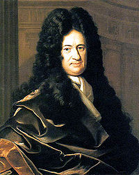

| Choisissez votre langue ! | Choose your language ! |
Galerie des portraits
Voici les deux contributeurs principaux au calcul différentiel, du moins à ses débuts.Portrait Gallery
Here are the two main contributors to differential calculus, at least in its early days.| Isaac Newton (1643/1727-UK) | Wilhelm Leibniz (1646/1716-DE) |

|
 |
Approche intuitive
Notion de vitesse moyenne
Considérons un point mobile M(t) en mouvement rectiligne, qui se déplace donc sur un axe orienté. Sa position est repérée à tout instant t par son abscisse x(t) sur cet axe.Intuitive approach
Notion of average speed
Consider a mobile point M(t) in rectilinear motion, which therefore moves on an oriented axis. Its position is identified at any instant t by its abscissa x(t) on this axis.définition 1
La
'distance algébrique'
parcourue entre les instants t0 et t est donc:
\( \displaystyle x\left ( t \right )-x\left ( t_{0} \right ) \)
definition 1
The
'algebraic distance'
traveled between times t0 and t is therefore:
\( \displaystyle x\left ( t \right )-x\left ( t_{0} \right ) \)
définition 2
La
'vitesse moyenne'
du mobile entre les instants t0 et t est donc:
\( \displaystyle \frac{x\left ( t \right )-x\left ( t_{0} \right )}{t-t_{0}} \)
definition 2
The
'average speed'
of the mobile between times t0 and t is therefore:
\( \displaystyle \frac{x\left ( t \right )-x\left ( t_{0} \right )}{t-t_{0}} \)
Exemple
Simulation de la chute d'un corps dans le vide.En abscisses l'axe des temps gradué en secondes.
En ordonnées les distances en mètres.
La loi est x(t)=-(1/2)gt2 où (g est l'accélération de la pesanteur soit environ 9.81 m/s2)
Appuyer sur le bouton 'Go' pour simuler le lâcher du corps.
Appuyer sur 'Stop/Restart' si vous voulez arrêter le processus de chute pour voir les paramètres.
Appuyer sur 'Stop/Restart' pour reprendre le processus de chute où vous l'avez arrêté.
Le bouton 'Go' vous permet également de recommencer un nouveau lâcher, après la fin du processus.
L'abscisse du mobile en m et sa vitesse moyenne en m/s depuis le départ sont affichés pour les temps correspondant à des secondes.
Cette vitesse moyenne est la pente de la droite tracée en rouge.
Example
Simulation of the fall of a body on earth in the void.On the abscissa the time axis graduated in seconds.
In ordinates the distances in meters.
The law is x(t)=-(1/2)gt2 where (g is the acceleration due to gravity or approximately 9.81 m/s2)
Press the 'Go' button to simulate letting go of the body.
Press 'Stop/Restart' if you want to stop the dropping process to see the settings.
Press 'Stop/Restart' to resume the dropping process where you left off.
The 'Go' button also allows you to start a new release, after the process is complete.
The abscissa of the mobile in m and its average speed in m/s since the start are displayed for the times corresponding to seconds.
This average speed is the slope of the line drawn in red.
Même chose que la précédente, mais cette fois ce sont les vitesses moyennes entre deux instants consécutifs t et t+δt qui s'affichent.
Ces vitesses moyennes sont les pentes des sécantes à la courbe représentative de x(t) passant par les points (t,x(t)),(t+δ,x(t+δ)).
Vous pouvez fixer δ au début de la descente avec le curseur entre 0.2 et 1.
Nous sommes ici en présence d'un mouvement à vitesse non constante, ou encore d'un mouvement accéléré.
Ces vitesses moyennes sont les pentes des sécantes à la courbe représentative de x(t) passant par les points (t,x(t)),(t+δ,x(t+δ)).
Vous pouvez fixer δ au début de la descente avec le curseur entre 0.2 et 1.
Nous sommes ici en présence d'un mouvement à vitesse non constante, ou encore d'un mouvement accéléré.
Same thing as the previous one, but this time it is the average speeds between two consecutive times t and t+δt that are displayed.
These average velocities are the slopes of the secants to the representative curve of x(t) passing through the points (t,x(t)),(t+δ,x(t+δ)).
You can set δ at the beginning of the descent with the cursor between 0.2 and 1.
We are here in the presence of a movement at a non-constant speed, or a so-called 'accelerated' movement.
These average velocities are the slopes of the secants to the representative curve of x(t) passing through the points (t,x(t)),(t+δ,x(t+δ)).
You can set δ at the beginning of the descent with the cursor between 0.2 and 1.
We are here in the presence of a movement at a non-constant speed, or a so-called 'accelerated' movement.
Notons qu'une vitesse moyenne correspond exactement à un .
Il est donc logique de calculer la vitesse moyenne entre l'instant t0 et un instant t de plus en plus rappoché de t0.
Vitesse instantanée
Nous voulons maintenant, donner un sens à la vitesse précise 'à l'instant t0' de notre mobile en chute libre.Il est donc logique de calculer la vitesse moyenne entre l'instant t0 et un instant t de plus en plus rappoché de t0.
Note that an average speed corresponds exactly to a .
It is therefore logical to calculate the average speed between the instant t0 and an instant t increasingly closer to t0.
Instant speed
We now want to make sense of the precise speed 'at instant t0' of our mobile in free fall.It is therefore logical to calculate the average speed between the instant t0 and an instant t increasingly closer to t0.
définition 3
Sachant que la vitesse moyenne est un taux de variation, la vitesse instantanée apparaîtra donc comme la limite d'un taux de variation entre deux instants (si cette limite existe, bien sûr).
\( \displaystyle v\left ( t_{0} \right )= \lim_{t \to t_{0},t\neq t_{0}}\frac{x\left ( t \right )-x\left ( t_{0} \right )}{t-t_{0}} \)
definition 3
Knowing that the average speed is a rate of change, the instantaneous speed will therefore appear as the limit of a rate of change between two instants (if this limit exists, of course).
\( \displaystyle v\left ( t_{0} \right )= \lim_{t \to t_{0},t\neq t_{0}}\frac{x\left ( t \right )-x\left ( t_{0} \right )}{t-t_{0}} \)
Calculer une vitesse instantanée revient donc à de la forme \( \frac{0}{0} \).
Dans notre cas si g désigne l'accélération de la pesanteur g=9.81.. \( \Delta x\left ( t_{0},t \right )=\frac{1}{2}g\left ( t_{0}+t \right ) \) d'où \( v(t_{0})=g\times t_{0}\)
Dans notre cas si g désigne l'accélération de la pesanteur g=9.81.. \( \Delta x\left ( t_{0},t \right )=\frac{1}{2}g\left ( t_{0}+t \right ) \) d'où \( v(t_{0})=g\times t_{0}\)
Calculating an instantaneous speed therefore amounts to of the form \( \frac{0}{0} \).
In our case if g designates the acceleration of gravity g=9.81.. \( \Delta x\left ( t_{0},t \right )=\frac{1}{2}g\left ( t_{0}+t \right ) \) hence \( v(t_{0})=g\times t_{0}\)
In our case if g designates the acceleration of gravity g=9.81.. \( \Delta x\left ( t_{0},t \right )=\frac{1}{2}g\left ( t_{0}+t \right ) \) hence \( v(t_{0})=g\times t_{0}\)
propriété 1
Graphiquement, la vitesse instantanée sera représentée par la pente de la position limite de la sécante à la courbe x(t) entre les points d'abscisse t et t0 lorsque t tend vers t0, c'est exactement ce qu'on appelle une 'tangente'.
property 1
Graphically, the instantaneous speed will be represented by the slope of the limit position of the secant to the curve x(t) between the points of abscissa t and t0 when t tends towards t0 is exactly what is called a 'tangent'.
Même utilisation que les deux précédentes, mais cette fois ce sont les vitesses instantanées (pentes des tangentes tracées en rouge) qui s'affichent.
Same use as the two previous ones, but this time it is the instantaneous velocities (slopes of the tangents drawn in red) that are displayed.
Il peut être intéressant de comparer les résultats affichés pour les vitesses par cette appliquette (vitesses instantanées) et l'appliquette précédente (vitesses moyennes entre deux instants distants d'une seconde).
On constatera que plus t augmente et plus la différence relative entre la vitesse moyenne et la vitesse instantanée diminue.
Cela est dû au fait que pour des valeurs de t de plus en plus grandes la courbure de la parabole diminue et, de ce fait, la sécante entre deux instants qui diffèrent d'une unité tend à se confondre avec la tangente.
On constatera que plus t augmente et plus la différence relative entre la vitesse moyenne et la vitesse instantanée diminue.
Cela est dû au fait que pour des valeurs de t de plus en plus grandes la courbure de la parabole diminue et, de ce fait, la sécante entre deux instants qui diffèrent d'une unité tend à se confondre avec la tangente.
Généralisation
La dérivée, que nous allons présenter dans les pages qui suivent, est un outil pour modéliser des taux de variation instantanés, comme:- la vitesse d'un mobile (exemple que nous avons développé ci-dessus)
- une accélération (comme variation instantanée d'une vitesse)
- le débit d'un fleuve ou d'un robinet
- une intensité électrique (variation instantanée d'une quantité d'électricté)
- la pente d'une tangente
It may be interesting to compare the results displayed for the speeds by this applet (instantaneous speeds) and the previous applet (average speeds between two instants one second apart).
It will be seen that the more t increases, the more the relative difference between the average speed and the instantaneous speed decreases.
This is due to the fact that for larger and larger values of t the curvature of the parabola decreases and, as a result, the secant between two instants which differ by one unit tends to merge with the tangent.
It will be seen that the more t increases, the more the relative difference between the average speed and the instantaneous speed decreases.
This is due to the fact that for larger and larger values of t the curvature of the parabola decreases and, as a result, the secant between two instants which differ by one unit tends to merge with the tangent.
Generalization
The derivative, which we will present in the following pages, is a tool for modeling instantaneous rates of change, such as:- the speed of a mobile (example we developed above)
- an acceleration (as an instantaneous variation of a speed)
- the flow of a river or a tap
- an electrical intensity (instantaneous variation of a quantity of electricity)
- the slope of a tangent
|
Création Gilles Dubois
Created by Gilles Dubois
|
Janvier 2022
January 2022
|
Version mobile Jquery
Mobile Jquery version
|
|